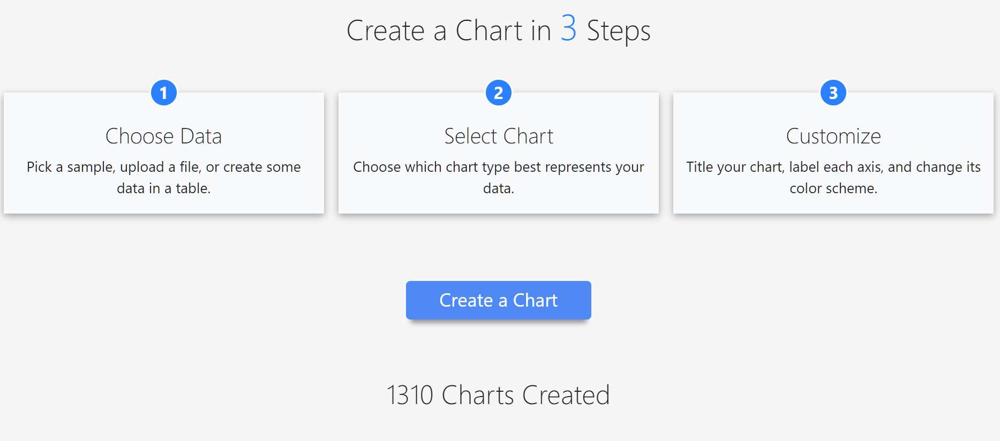
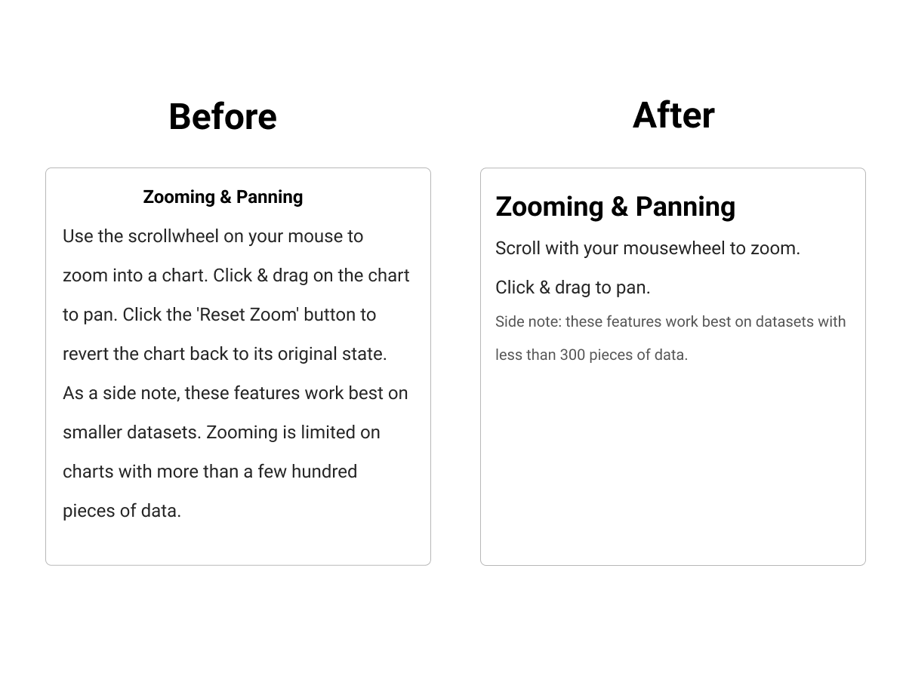
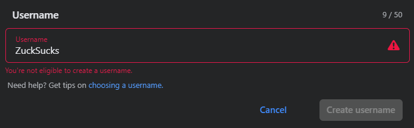
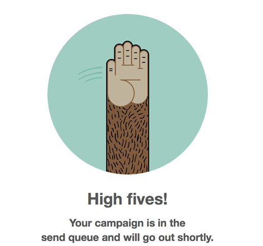

Overview
My current writing is found in two places.
In October 2021, I was the main author (responsible for all sections except Related Works and some parts of the Method section) on a research article published by Frontiers Journal 👇
Frontiers in Computer Science - Digital Education ArticleI have a Medium page.
My highest viewed piece was published by DevGenius, a publication with over 10k followers. It was also curated by Medium, meaning the editors at the site found the piece of considerable quality and promoted it throughout their site and newsletter.
I use this space to freely express myself. I also use it to challenge myself through extensive research, as shown by my article on the modern day mental health crisis.
Some things I really like about writing:
- Fitting the tone of a product
- Making my writing 'fun' to read through whitespace and style
- Editing
- Researching until my browser can't handle the tabs
- *Changing my ideas in light of better evidence
* On my article about social media and mental health, I thought many social media companies neglected the topic entirely, but I discovered that companies like Facebook actually have extensive measures for caring about their users.
Case Studies
Let me take you through a journey. We'll start with a critique of my first project before I studied ux and technical writing and discovered the importance of making every word matter.
SimpleChartsRI (3 before/after comparisons)
I wrote the site's copy. While it didn't have any major problems, I would have changed some things looking back.
One trick I learned since finishing this project was to write down 3 adjectives for your brand in order to identify your brand's voice. Here it would have been simple, informative, and friendly.
Let's start with the landing page, which had some slight room for improvement.
Landing Page - Before
The Create a Chart button could have been changed to just Create, but for our target audience (teachers who are not tech-savvy) I thought the redudnacy may have been helpful (a/b test could have been useful), though there was another problem at play with this choice.
Clicking the Create a Chart button brings you to the Choose Data step, not a page with an actual chart on it. Not the worst problem, just not super clear.
Finally, I would have removed the body text for each step and just kept the header. The user doesn't need to be overwhelmed here, they can progressively understand the finer details as they go along. In addition to making the colors pop a little more, I would have changed the border to be rounder to fit with that friendly theme.
Landing Page - After
.png)
Now it's simple, informative without boring you, and has a friendly feel.
Other Copy Changes
While I could probably rewrite most of the site to add onto those 3 new adjectives, I will spare you and choose only a few examples that demonstrate what I've learned since then.
I will rebuild each section using Figma for simplicity.
Help Documentation - Zooming & Panning section
These changes are better for a few reasons.
- Removed obvious info
- Visually separated information where it made sense
- Front-heavy text increases skimmability
- Concrete writing (300 pieces of data)
This section doesn't need to be thorough like some technical documentation for a specific method call. If our tool's main functionality saves the user's time, so should its documentation so long as it maintains its precision.
Help Documentation - Formatting section

Micro Case Studies
Even the biggest companies have bad UX. Here are some adjustments I'd make to what I've found.
I tried making a business account for my newsletter. But when making the name, Facebook gave me this error message.
Ok, Dad. Can an error message sound any more formal? The project was not called ZuckSucks, but the message was the same. Even the error icon in the input box didn't specify the problem.
What was I supposed to do with this information? Was the username taken? Was the name not allowed? Did I not authenticate my account first? Why do I need to read a guide? Why can't it just tell me?
It turned out my name was taken.
A simple "Username taken." would have done just fine.
Blog post on UX Writing (Mailchimp)
This image was shown as an example of great copy in a blog post.
"Not only does the customer get feedback about the task (mail will go out shortly) but it also eases the anxiety of the user by offering a friendly high five."
While I agree it is mostly great, I think it can be improved.
What is a send queue? Users at this point shouldn't have more questions. This is not the place for jargon, even if most people can understand what it is.
We can make it more concrete by removing the jargon.
Your campaign will go out shortly.
Ah, that's better.